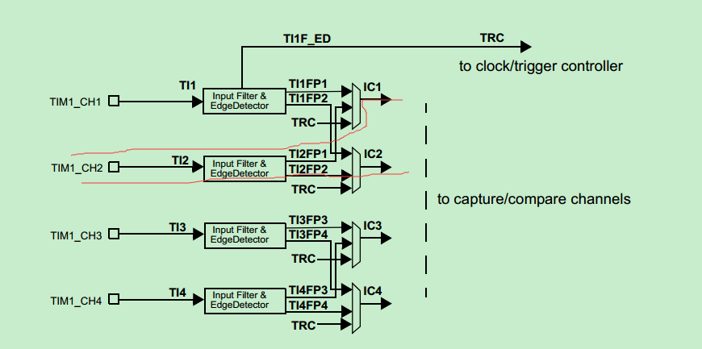
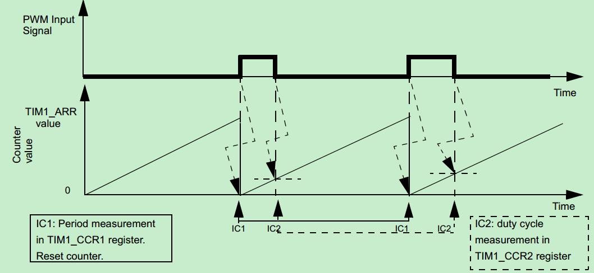

using stm8s pwm capture
Updated:
目的
使用STM8捕获PWM波的周期，脉宽，计算出占空比。有两种方案实现，第一种使用输入捕获，在中断中切换触发沿。第二种直接使用PWM捕获。这里使用第二种。
下文对STM32同样适用。
硬件
这里使用STM8S003，PWM信号从TIM1_CH2输入。
代码
使用库函数
解释
首先需要理解一个框图：

从上面可以看到，从TIM_CH2输入PWM后，经过滤波器和检测器，会有链条路径到输入捕获寄存器。一个是TI2FP2，一个是TI2FP1。PWM捕获，关键是控制这两个信号。
两个信号设置为不同的触发沿，比如TI2FP1设置上升沿，则TI2FP2就设置下降沿。
1TIM1_PWMIConfig(TIM1_CHANNEL_2, TIM1_ICPOLARITY_RISING, TIM1_ICSELECTION_DIRECTTI, TIM1_ICPSC_DIV8, 0x10);配置其中一个为触发信号，触发模式配置成复位触发模式。
12TIM1_SelectInputTrigger(TIM1_TS_TI2FP2);TIM1_SelectSlaveMode(TIM1_SLAVEMODE_RESET);

上面图是官方参考手册上的例子，其设置的触发信号是TI1FP1上升沿。可以看到上升沿到来的时候，计数器被清零(即复位触发模式)。到下降沿，计数器的值被装在到IC2的捕获计数器。再到下一个上升沿到来时，又被触发。我们需要在此时读IC1和IC2的捕获寄存器的值。IC1的值即周期，IC2的值即正脉宽。
注意点
- 若是用寄存器方法，记得读捕获寄存器时(CCRx)，要先读高位，再读低位。使用库函数的话，ST已经写好了。
- 至少要捕获两次，清空前面无效值
- 读取寄存器值之前，需要先关闭捕获功能。因为读CCRx低位，会导致捕获标记清空，若是外部信号一直在输出，可能读出的值就是下一次的捕获值。而这个值不一定准确。
- 只有CH1和CH2支持。虽然从框图上看，CH3和CH4也是一对，但是在从模式触发选择寄存器(SMCR)中只能选TI1FP1和TI2FP2，库函数也只支持TI1FP1和TI2FP2。所以最好只从CH1或者CH2输入PWM。